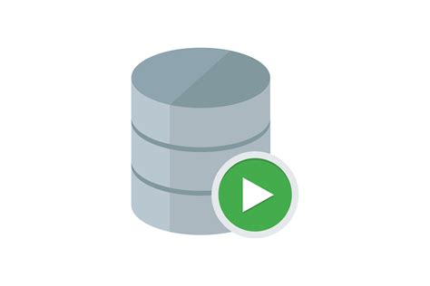

Alternance - Parcoursup
Période : Septembre 2024 - Juin 2025
Alternance dans le cadre de mon année de BUT3
Parcoursup est la plateforme nationale d’admission en première année de l’enseignement supérieur en France.
Elle permet aux lycéens, étudiants en réorientation et candidats en reprise d’études de formuler leurs vœux
pour intégrer une formation après le baccalauréat.
Accès à Parcoursup
Première mission : Optimisation / Amélioration de l'offre de formation
En tant qu'usager du SCN, il faut permettre depuis l'écran de gestion d'une formation d'afficher la liste des "liens" établissements d'un établissement composante. Mettre en place un formulaire qui permettra d'ajouter une nouvelle composante sur cet établissement gestionnaire.
-
Première mission
Requêtes SQL, création de fonctions et de PK
Mise en place d'une API
Formation sur la sécurité des applications
Mise à jour de page web existantes
Optimisation de l'offre de formation
Langages et Outils utilisés

Compétences développées :